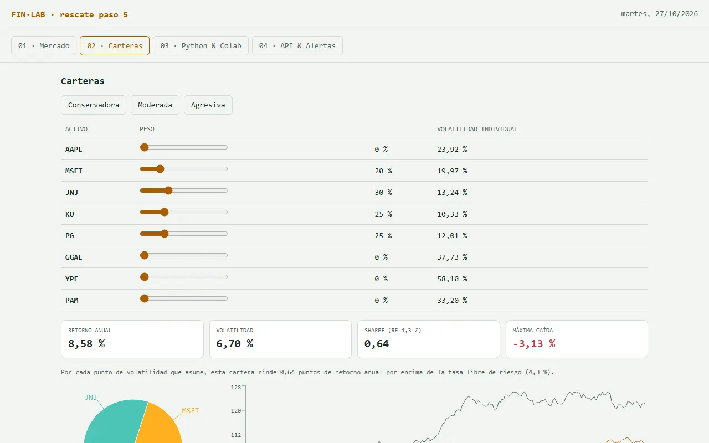

PASO 5 · LA PESTAÑA MÁS “DE FINANZAS”
Carteras: retorno, riesgo y Sharpe
Tres carteras predefinidas que pueden ajustar con controles deslizantes, y las métricas que responden la pregunta de siempre: ¿cuánto riesgo asumo por cada punto de retorno?
¿Llegan tarde o se rompió el archivo? Bajen la versión con la que termina el paso 4, guárdenla como finlab.html y arranquen este paso desde ahí. ⬇ BAJAR EL PUNTO DE PARTIDA (PASO 4)
Qué van a lograr
ConservadoraModeradaAgresiva
RETORNO ANUAL8,1 %
VOLATILIDAD9,4 %
SHARPE0,40
MÁXIMA CAÍDA−7,2 %
| JNJ | 30 % |
| KO | 25 % |
| PG | 25 % |
| MSFT | 20 % |
“Por cada punto de volatilidad que asume, esta cartera rinde 0,40 puntos de retorno anual por encima de la tasa libre de riesgo (4,3 %).” · Valores ilustrativos. Abajo van la torta de pesos y el gráfico base 100.
Así va quedando
- Esqueleto (ya está)
- Datos (ya está)
- Mercado (ya está)
- Indicadores (ya está)
- Carteras (este paso)
- API (todavía no)
- Colab (todavía no)
- n8n (todavía no)
- #/guiado (todavía no)
- Clave (todavía no)
- Modelo (todavía no)
- Agente (todavía no)
- Consejo (todavía no)
- MCP (todavía no)

El prompt
PROMPT · PASO 5
Pegar debajo el archivo del paso 4.
Paso 5. En la pestaña "02 · Carteras": - 3 botones de cartera predefinida: Conservadora: JNJ 30%, KO 25%, PG 25%, MSFT 20% Moderada: AAPL 20%, MSFT 20%, KO 15%, JNJ 15%, GGAL 15%, PG 15% Agresiva: GGAL 30%, YPF 25%, PAM 20%, AAPL 15%, MSFT 10% - un control deslizante de peso por activo; si los pesos no suman 100%, normalizalos y avisalo - al lado de cada control, la volatilidad anualizada individual de ese activo (desvío de sus retornos diarios × √252) - tarjetas con: retorno anualizado (media diaria × 252), volatilidad anualizada (con la matriz de covarianzas × 252), Sharpe con tasa libre de riesgo 4,3% y máxima caída - un gráfico de torta con los pesos - un gráfico de línea base 100 de la cartera contra una cartera equiponderada de todos los activos Debajo de las tarjetas, una línea en lenguaje simple que interprete el Sharpe (por ejemplo: "por cada punto de volatilidad que asume, esta cartera rinde X puntos de retorno anual por encima de la tasa libre de riesgo (4,3 %)"). [pegar el archivo completo]
Para pensar: si el grupo usó activos distintos en el paso 0, pídanle a la IA que proponga tres perfiles con esos activos y que justifique cada peso en una línea. Después comparen su propuesta con la de otro grupo.
Qué hacer, clic por clic
- Peguen el prompt y el archivo actual, guarden la respuesta y abran la pestaña 02 · Carteras.
- Toquen los tres perfiles y anoten en un papel retorno, volatilidad y Sharpe de cada uno.
- Hagan la prueba de un solo activo (ver “Cómo comprobar”) moviendo los controles.
- Discutan en grupo qué perfil elegirían para alguien que necesita la plata en un año, y por qué.
- Guarden finlab-v5.html.
Cómo comprobar
- Prueba de un solo activo: 100% en KO. La volatilidad de la cartera tiene que ser igual a la volatilidad individual de KO. Si no, la covarianza está mal.
- Diversificación: la volatilidad de la Moderada tiene que ser menor que el promedio ponderado de las volatilidades individuales.
- Orden esperado: la Agresiva tiene más volatilidad que la Conservadora.
- Sharpe a mano: con los números de las tarjetas, calculen (retorno − 4,3%) ÷ volatilidad. Tiene que dar lo mismo.
Para discutir en grupo: en estos datos simulados cada activo se mueve por su cuenta (no hay correlación), así que diversificar baja mucho el riesgo y el Sharpe puede salir muy alto (2 o más). En la realidad las acciones suelen moverse juntas, la diversificación ayuda menos y un Sharpe mayor a 1 ya es muy bueno. ¿Qué Sharpe esperarían para estas mismas carteras con datos reales?
Si comparan con la terminal del curso: ahí la cartera se compara contra una equiponderada de los activos de la propia cartera; en este paso, contra una equiponderada de todos los activos. Por eso las dos curvas base 100 no van a coincidir.
Si algo falla
¿Se trabaron después de tres intentos? Esta es una versión que ya cumple todo lo de este paso. Pueden abrirla para comparar o bajarla y seguir con el próximo. VER EL RESULTADO ⬇ BAJAR LA VERSIÓN DE RESCATE
- La volatilidad de un solo activo no coincide: “Con 100% en KO la volatilidad de la cartera da X, pero la de KO sola da Y. Revisá el cálculo de la matriz de covarianzas y mostrame la fórmula que usás.”
- El Sharpe da enorme (más de 5): probablemente mezcló retornos diarios con anuales. Pídanle que muestre las dos cifras antes de dividir.
- La página quedó en blanco: usen el prompt de rescate.
La idea, en un gráfico
Para entender más · cómo funciona y palabras nuevas
El flujo: cómo se mide una cartera
1
Eligen la cartera
Un perfil o pesos a mano; se ajustan para que sumen 100 %.
2
Los retornos diarios
Cuánto subió o bajó cada activo cada día.
3
Promedio y movimiento conjunto
Cuánto rinde cada activo y si se mueven juntos, llevado a un año.
4
Retorno, riesgo y Sharpe
Las tres cifras que resumen la cartera.
5
El gráfico base 100
Su cartera contra una con el mismo peso en todos los activos.